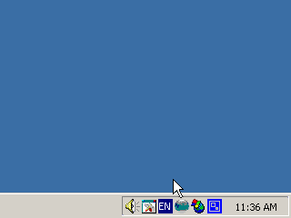

LingoLessonsIncarnation 1: LingoLessons was effectively an evolution of the ideas I had for CardFlasher, but extended to the web and a whole host of platforms. You could create and share your own lessons with other internet users. I built the first first version of the site in 2004, and spent quite some time building it up, but ultimately the ideas grew to big for me to manage with a day job, so I had to put it to suspend the project. Here are some screenshots below of the various versions I wrote. Essentially you could start study on one client, and continue where you left on another client. In addition to these I wrote a Java MIDP version as well as a Windows Mobile version. I just love writing things for different application platforms!
Incarnation 2: In 2006 I then decided to develop and release a shareware version of a more advanced version of CardFlasher, still using the LingoLessons name. It was reasonably popular, but piracy was a very big issue. After just 5 registrations, my app found it's way on a huge number of pirate websites, and I saw people on sharing sites trading it between each other. It wasn't the sort of thing you like to see after all the effort. So I went down the path of adding various anti-piracy measures, but this took time and money. Regarding the latter I had to increase the price of the app to cover the costs of the tools I needed to stop the piracy, but by then I had become quite demotivated and sales reduced to a small trickle, so I decided to stop selling it and just support any queries from existing customers. There were some good lessons learnt (excuse the pun) in the process. Below is a screenshot of the latest version of LingoLessons in action. As you can see, I took the idea back to it's roots and made it a method of study you perform while you are doing something else. The rationale is that people often just don't have time to sit down in front of a computer to study, but while they are surfing, or checking their email, my app can be testing you without you feeling like you're being tested. 
Incarnation 3? I'm currently taking what I have learnt from the above experiences and developing in incarnation that takes the strengths of each idea. Watch this space.
| |||||||